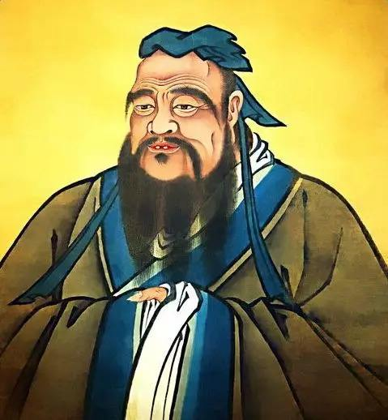
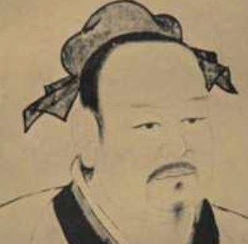
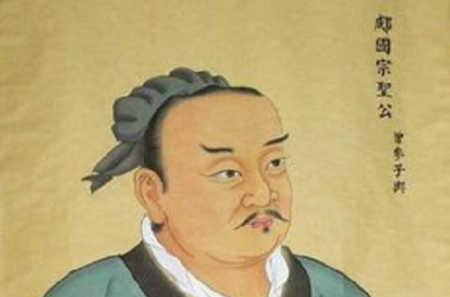
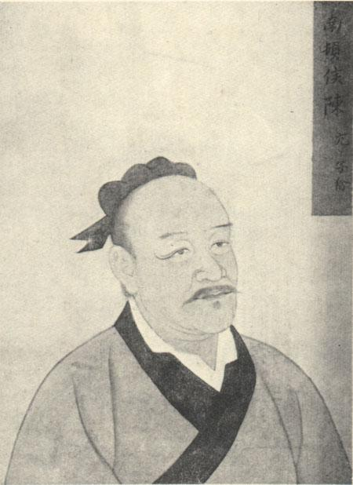
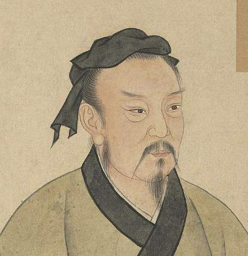
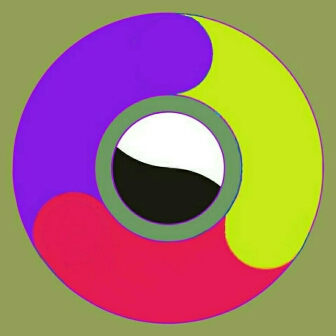

返回
儒家聊天群(3001)
2020-04-24 07:30:16 星期五

SVIP8
孔子
学到知识后按时温习并实践练习，不是一件令人心生喜悦的事吗？有志同道合的人从远方来，不是很令人高兴的吗？人家不了解我，我也不怨恨、恼怒，不也是一个有德的君子吗？

VIP7
有子
孝顺父母，顺从兄长，而喜好触犯上层统治者，这样的人是很少见的。不喜好触犯上层统治者，而喜好造反的人是没有的。君子专心致力于根本的事务，根本建立了，治国做人的原则也就有了。孝顺父母、顺从兄长，这就是仁的根本啊！
SVIP8
孔子
花言巧语，装出和颜悦色的样子，这种人的仁心就很少了。

VIP8
曾子
我每天多次反省自己，为别人办事是不是尽心竭力了呢？同朋友交往是不是做到诚实可信了呢？老师传授给我的学业是不是复习了呢？
SVIP8
孔子
治理一个拥有一千辆兵车的国家，就要严谨认真地办理国家大事而又恪守信用，诚实无欺，节约财政开支而又爱护官吏臣僚，役使百姓要不误农时
SVIP8
孔子
弟子们在父母跟前，就孝顺父母；出门在外，要顺从师长，言行要谨慎，要诚实可信，寡言少语，要广泛地去爱众人，亲近那些有仁德的人。这样躬行实践之后，还有余力的话，就再去学习文献知识。
VIP7
子夏
一个人能够看重贤德而不以女色为重；侍奉父母，能够竭尽全力；服侍君主，能够献出自己的生命；同朋友交往，说话诚实恪守信用。这样的人，尽管他自己说没有学习过，我一定说他已经学习过了。
SVIP8
孔子
君子不庄重就没有威严，更没有威望，而且学问也不会坚固。要以忠信为主，不要同与自己不同道的人交朋友；有了过错，就不要怕改正。
VIP8
曾子
谨慎地对待父母的去世，追念久远的祖先，自然会导致老百姓日趋忠厚老实了。

VIP3
子禽
@子贡 老师到了一个国家，总是预闻这个国家的政事。（这种资格）是他自己求得呢，还是人家国君主动给他的呢？

SVIP12
子贡
老师温良恭俭让，所以才得到这样的资格，（这种资格也可以说是求得的），但他求的方法，或许与别人的求法不同吧？
SVIP8
孔子
当他父亲在世的时候，（因为他无权独立行动），要观察他的志向；在他父亲死后，要考察他的行为；若是他对他父亲的合理部分长期不加改变，这样的人可以说是尽到孝了。
VIP7
有子
礼的应用，以和谐为贵。古代君主的治国方法，可宝贵的地方就在这里。但不论大事小事只顾按和谐的办法去做，有的时候就行不通。（这是因为）为和谐而和谐，不以礼来节制和谐，也是不可行的。
VIP7
有子
一个人诚信符合道义，那么他的话是可以相信并践行的；一个人的恭敬是符合礼法的，那么他就不会遭受耻辱；一个人好古学古，如果不排斥创新，这种古文化就可以继承。
SVIP8
孔子
君子，饮食不求饱足，居住不要求舒适，对工作勤劳敏捷，说话却小心谨慎，到有道的人那里去匡正自己，这样可以说是好学了。
SVIP12
子贡
贫穷而能不谄媚，富有而能不骄傲自大，怎么样？
SVIP8
孔子
这也算可以了。但是还不如虽贫穷却乐于道，虽富裕而又好礼之人。
SVIP12
子贡
《诗》上说，‘要像对待骨、角、象牙、玉石一样，切磋它，琢磨它’，就是讲的这个意思吧？
SVIP8
孔子
赐呀，你能从我已经讲过的话中领会到我还没有说到的意思，举一反三，我可以同你谈论《诗》了。 不怕别人不了解自己，只怕自己不了解别人。
神经病培育中心
大佬们好。

SVIP8
孔子
楼上这位是怎么混进来的？管理呢？把他给我踢了。
发送